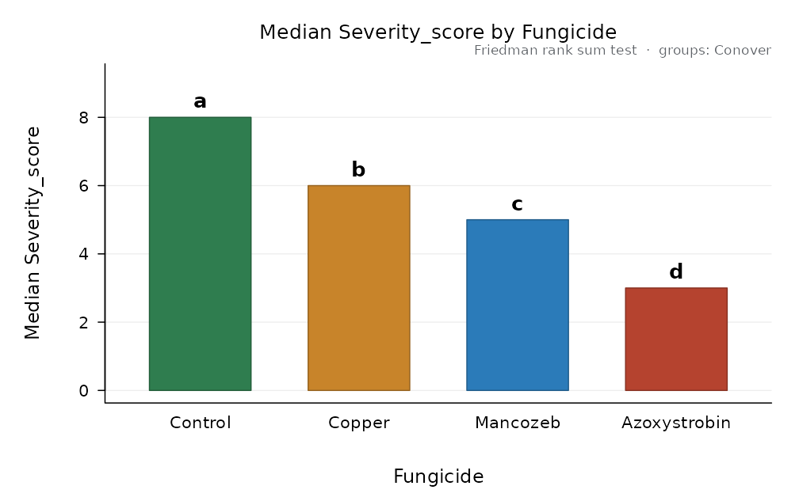
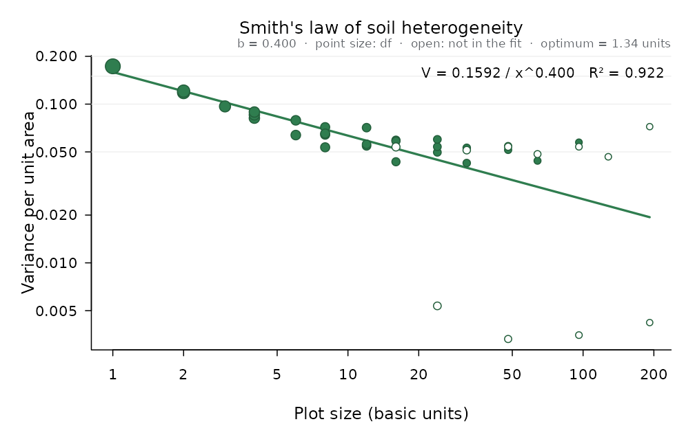

When the assumptions fail
nonparametric() picks the rank-based alternative that
fits the design: Kruskal-Wallis for a completely randomised design,
Friedman for complete blocks, Scheirer-Ray-Hare for two factors, the
aligned rank transform for factorials in blocks, and Welch’s ANOVA when
only the variances differ. Ordinal scores, like disease severity, are a
typical case:
dz <- design_anova(disease_scores, "Severity_score", "Fungicide", block = "Block")
np <- nonparametric(dz)
np
#>
#> Friedman rank sum test
#> Response: Severity_score factor: Fungicide
#> chisq = 14.04, df = 3, p = 0.002851
#> Kendall_W = 0.936
#> Iman-Davenport F = 58.5 on 3 and 12 df, p = 1.959e-07
#>
#> Pairwise comparisons: Conover (p adjusted by holm)
#> level_i level_j statistic p p_adj different
#> Control Mancozeb 7.794 4.904e-06 2.452e-05 TRUE
#> Control Azoxystrobin 12.990 1.989e-08 1.193e-07 TRUE
#> Control Copper 5.196 2.233e-04 6.699e-04 TRUE
#> Mancozeb Azoxystrobin 5.196 2.233e-04 6.699e-04 TRUE
#> Mancozeb Copper 2.598 2.331e-02 2.331e-02 TRUE
#> Azoxystrobin Copper 7.794 4.904e-06 2.452e-05 TRUE
#>
#> Groups (levels sharing a letter do not differ at alpha = 0.05):
#> level n median mean mean_rank group
#> Control 5 8 7.8 4.0 a
#> Copper 5 6 5.8 2.8 b
#> Mancozeb 5 5 4.8 2.2 c
#> Azoxystrobin 5 3 2.6 1.0 d
plot(np)
Further tests: Durbin’s test for balanced incomplete blocks, the van der Waerden normal-scores test and Mood’s median test.
durbin_test(bib_sorghum, "Yield_t_ha", "Hybrid", "Block")$test
#> $name
#> [1] "Durbin rank test for balanced incomplete blocks"
#>
#> $statistic
#> chisq
#> 10.44444
#>
#> $df
#> [1] 6
#>
#> $p
#> [1] 0.1071405
#>
#> $effect
#> NULL
#>
#> $F_form
#> F df1 df2 p
#> 3.91666667 6.00000000 8.00000000 0.03972924
waerden_test(bean_varieties, "Yield_kg_plot", "Variety")$test
#> $name
#> [1] "van der Waerden normal-scores test"
#>
#> $statistic
#> chisq
#> 17.069
#>
#> $df
#> [1] 4
#>
#> $p
#> [1] 0.001874183
#>
#> $effect
#> NULLThe Waller-Duncan test
A Bayesian alternative to the multiple range tests: the critical
difference adapts to the F of the treatments (large F, more liberal;
small F, more conservative). The result works with print()
and plot() like any other comparison:
fit <- design_anova(maize_nitrogen, "Yield_t_ha", "Nitrogen_kg_ha", block = "Block")
waller_duncan(fit, "Nitrogen_kg_ha")
#>
#> Waller-Duncan k-ratio t test (K = 100), alpha = 0.0672
#> Response: Yield_t_ha compared: Nitrogen_kg_ha
#> Error: Residual error (MS = 0.01643, df = 9)
#> Bayesian k-ratio rule: K = 100, F = 437.3 on 3 and 9 df, critical t = 2.0803 (comparison-wise alpha about 0.067).
#> Minimum significant difference = 0.1885
#>
#> Nitrogen_kg_ha n mean se raw_mean sd group
#> 180 4 7.183 0.06409 7.183 0.2943 a
#> 120 4 6.885 0.06409 6.885 0.3663 b
#> 60 4 5.845 0.06409 5.845 0.2978 c
#> 0 4 4.215 0.06409 4.215 0.3101 d
#>
#> Means sharing a letter do not differ.Disease progress
The area under the disease progress curve (AUDPC) and its stairs version (AUDPS, which weighs the first and last assessments better) summarise an epidemic in one number per plot, ready for the analysis of variance:
head(blight_progress)
#> Block Treatment Day Severity_pct
#> 1 1 Untreated 21 23.9
#> 2 1 Untreated 28 55.5
#> 3 1 Untreated 35 80.3
#> 4 1 Untreated 42 100.0
#> 5 1 Untreated 49 100.0
#> 6 1 Untreated 56 100.0
a <- audpc_by_unit(blight_progress, "Severity_pct", "Day", c("Block", "Treatment"))
head(a)
#> Block Treatment n duration audpc audps audpc_rel audps_rel audpc_std audps_std
#> 1 1 Untreated 7 42 3484.25 3917.9 0.8295833 0.7995714 82.95833 79.95714
#> 2 1 Contact 7 42 2480.80 2856.7 0.5906667 0.5830000 59.06667 58.30000
#> 3 1 Systemic 7 42 1948.10 2294.6 0.4638333 0.4682857 46.38333 46.82857
#> 4 1 Alternated 7 42 1693.65 2005.5 0.4032500 0.4092857 40.32500 40.92857
#> 5 2 Untreated 7 42 3259.20 3659.6 0.7760000 0.7468571 77.60000 74.68571
#> 6 2 Contact 7 42 2489.55 2849.7 0.5927500 0.5815714 59.27500 58.15714
fa <- design_anova(a, "audps", "Treatment", block = "Block")
compare_means(fa, "Treatment")
#>
#> Tukey HSD (Tukey-Kramer), alpha = 0.05
#> Response: audps compared: Treatment
#> Error: Residual error (MS = 20409, df = 9)
#> Minimum significant difference = 315.4
#>
#> Treatment n mean se raw_mean sd group
#> Untreated 4 3591 71.43 3591 252.38 a
#> Contact 4 2898 71.43 2898 87.68 b
#> Systemic 4 2105 71.43 2105 159.93 c
#> Alternated 4 1788 71.43 1788 225.57 d
#>
#> Means sharing a letter do not differ.Soil heterogeneity and plot size
From a uniformity trial (one crop, no treatments, harvested in small basic units), Smith’s law relates the variance per unit area to the plot size. The index b (between 0 and 1) measures how correlated neighbouring units are and gives the optimum plot size for a cost ratio:
sm <- smith_index(uniformity_trial, cost_ratio = 2)
sm
#>
#> Smith's index of soil heterogeneity
#> Uniformity trial: 24 x 16 basic units, mean = 4.998, CV of the basic units = 8.32 %
#>
#> size width length plots df variance cv used
#> 1 1 1 384 383 0.173010 8.321 TRUE
#> 2 1 2 192 191 0.118250 6.880 TRUE
#> 2 2 1 192 191 0.120846 6.955 TRUE
#> 3 1 3 128 127 0.096731 6.222 TRUE
#> 4 1 4 96 95 0.081564 5.714 TRUE
#> 4 2 2 96 95 0.085626 5.854 TRUE
#> 4 4 1 96 95 0.089201 5.975 TRUE
#> 6 1 6 64 63 0.063830 5.054 TRUE
#> 6 2 3 64 63 0.079055 5.625 TRUE
#> 8 1 8 48 47 0.053451 4.625 TRUE
#> 8 2 4 48 47 0.064212 5.070 TRUE
#> 8 4 2 48 47 0.071609 5.354 TRUE
#> 8 8 1 48 47 0.065258 5.111 TRUE
#> 12 1 12 32 31 0.054553 4.673 TRUE
#> 12 2 6 32 31 0.055863 4.729 TRUE
#> 12 4 3 32 31 0.071087 5.334 TRUE
#> 16 2 8 24 23 0.043345 4.165 TRUE
#> 16 4 4 24 23 0.059299 4.872 TRUE
#> 16 8 2 24 23 0.058465 4.837 TRUE
#> 16 16 1 24 23 0.053755 4.638 FALSE
#> 24 1 24 16 15 0.005359 1.464 FALSE
#> 24 2 12 16 15 0.049709 4.460 TRUE
#> 24 4 6 16 15 0.053903 4.645 TRUE
#> 24 8 3 16 15 0.059940 4.898 TRUE
#> 32 4 8 12 11 0.042554 4.127 TRUE
#> 32 8 4 12 11 0.053080 4.609 TRUE
#> 32 16 2 12 11 0.051262 4.530 FALSE
#> 48 2 24 8 7 0.003315 1.152 FALSE
#> 48 4 12 8 7 0.051453 4.538 TRUE
#> 48 8 6 8 7 0.054437 4.668 TRUE
#> 48 16 3 8 7 0.053916 4.645 FALSE
#> 64 8 8 6 5 0.043974 4.195 TRUE
#> 64 16 4 6 5 0.048435 4.403 FALSE
#> 96 4 24 4 3 0.003507 1.185 FALSE
#> 96 8 12 4 3 0.057465 4.796 TRUE
#> 96 16 6 4 3 0.053906 4.645 FALSE
#> 128 16 8 3 2 0.046586 4.318 FALSE
#> 192 8 24 2 1 0.004206 1.297 FALSE
#> 192 16 12 2 1 0.072141 5.373 FALSE
#>
#> Fit of V_x = V_1 / x^b on the log scale (weighted by df, 28 shapes with 'used' TRUE; strips spanning the whole field left out):
#> V_1 = 0.1592, b = 0.4004, R-squared = 0.9219
#> Intermediate b: adjacent units are moderately correlated.
#> Optimum plot size (Smith, cost per plot / cost per unit area = 2): 1.335 basic units
plot(sm)